1. เริ่มต้นใช้งาน
1.1 ใช้งานผ่าน Google Chrome เท่านั้น
ระบบเปิดใช้งานได้บน Google Chrome บนคอมพิวเตอร์เท่านั้น ถ้าเปิดด้วยเบราว์เซอร์อื่น เช่น Microsoft Edge ระบบจะแสดงหน้าแนะนำให้เปิดด้วย Chrome
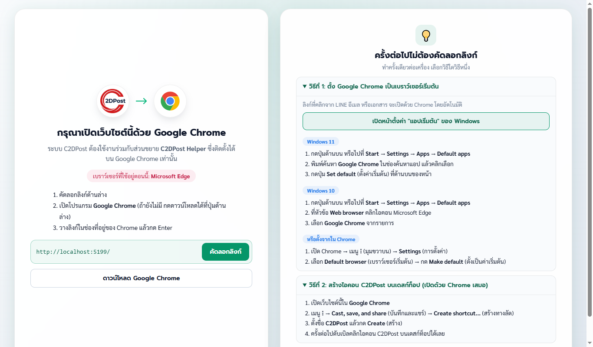
- กดปุ่ม เปิดด้วย Google Chrome หรือคัดลอกลิงก์ไปวางใน Chrome
- ถ้าต้องการให้ลิงก์เปิดใน Chrome ทุกครั้ง ทำตามขั้นตอนในการ์ดด้านขวาเพื่อตั้ง Chrome เป็นเบราว์เซอร์เริ่มต้น
1.2 ติดตั้ง C2DPost Helper (Extension)
Extension ใช้เชื่อมต่อกับระบบ e-Parcel ของไปรษณีย์เพื่อขอบาร์โค้ดและโหลดใบตอบรับ e-AR ต้องติดตั้งก่อนเข้าใช้งานบนคอมพิวเตอร์
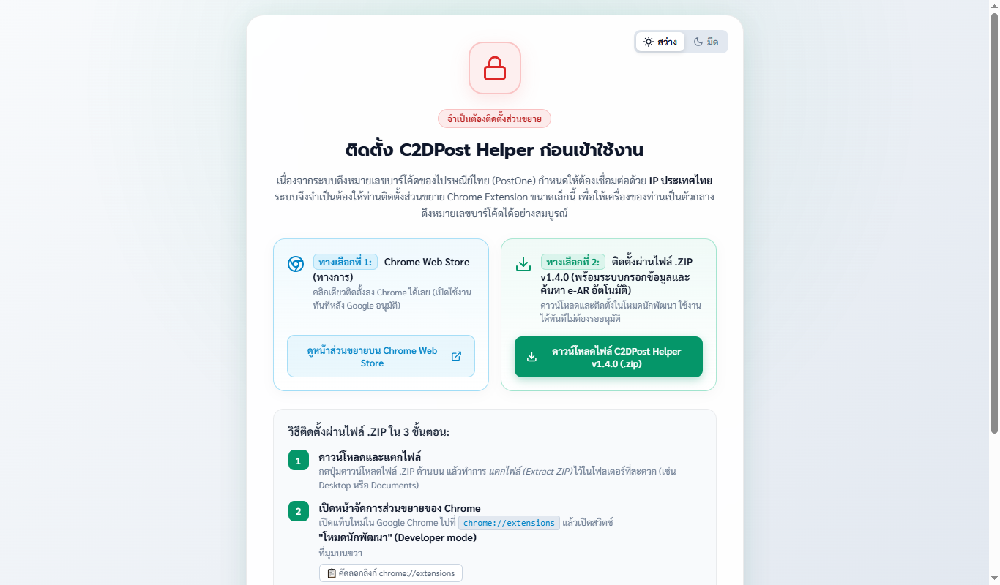
- กด ติดตั้งจาก Chrome Web Store แล้วกด เพิ่มใน Chrome
- กลับมาที่หน้าเว็บ C2DPost ระบบจะตรวจพบ Extension และเข้าสู่หน้าเข้าสู่ระบบให้อัตโนมัติ (ถ้าไม่เปลี่ยน ให้กดรีเฟรช)
2. ลงทะเบียนและเข้าสู่ระบบ
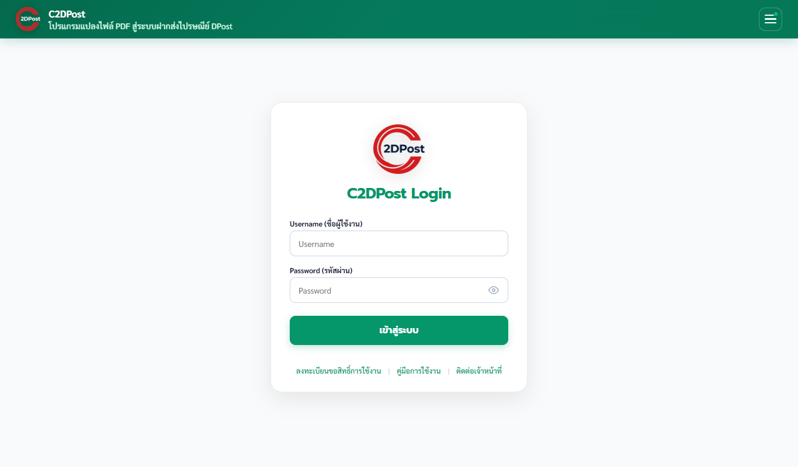
2.1 ลงทะเบียนขอสิทธิ์
- กด ลงทะเบียนขอสิทธิ์การใช้งาน ใต้ปุ่มเข้าสู่ระบบ
- กรอกชื่อผู้ใช้และรหัสผ่านของระบบ e-Parcel (ใช้ชุดเดียวกัน) เลือกหน่วยงาน และที่ทำการไปรษณีย์ที่รับผิดชอบ
- กดส่งคำขอ แล้วรอผู้ดูแลระบบอนุมัติ
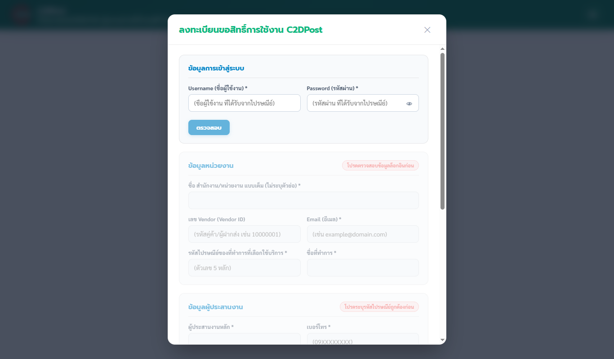
2.2 เข้าสู่ระบบ
กรอกชื่อผู้ใช้และรหัสผ่าน แล้วกด เข้าสู่ระบบ ระบบจะส่งข้อมูลบัญชีไปให้ Extension ใช้กับ e-Parcel ให้เอง
3. แปลงไฟล์ PDF
- ไปที่เมนู แปลงไฟล์ PDF แล้วกด เลือกไฟล์ PDF หรือลากไฟล์มาวาง (เลือกได้หลายไฟล์)
- ระบบอ่านชื่อ ที่อยู่ และรหัสไปรษณีย์ของผู้รับจากหนังสือแจ้งและจ่าหน้าซอง แล้วแสดงในตาราง
- ตรวจข้อมูลทุกแถว แก้ไขได้โดยคลิกที่ช่อง
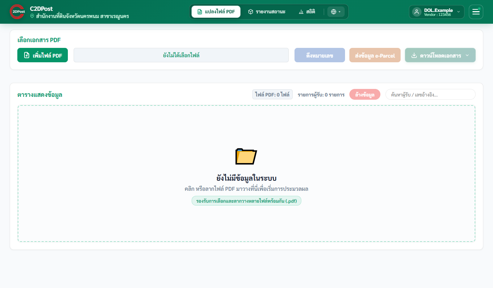
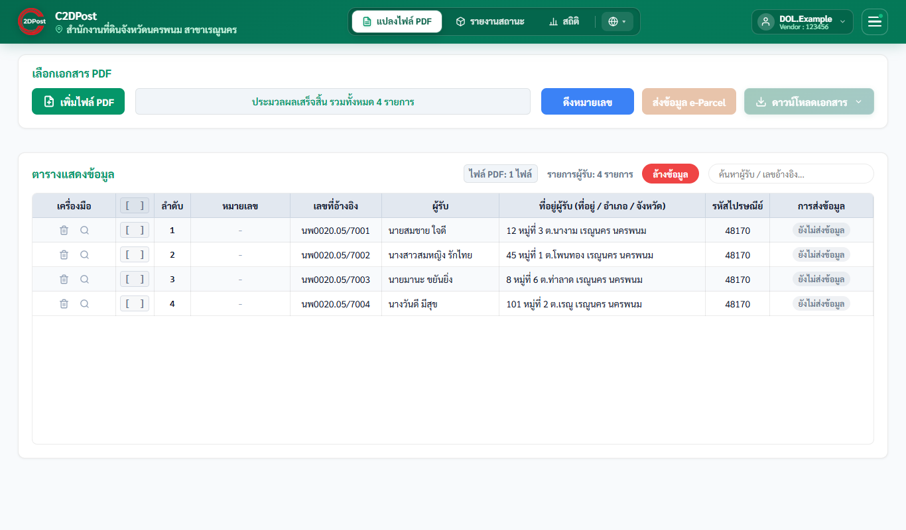
4. ขอบาร์โค้ดและดาวน์โหลดเอกสาร
- กด ขอบาร์โค้ด ระบบจะสร้างรายการใน e-Parcel ผ่าน Extension และใส่เลขบาร์โค้ดในตาราง
- กด ดาวน์โหลด แล้วเลือกเอกสารที่ต้องการ เช่น ไฟล์ Excel DPost หรือใบจ่าหน้า
5. รายงานสถานะพัสดุ
ดูสถานะพัสดุทั้งหมดที่หน่วยงานฝากส่งในช่วงวันที่เลือก
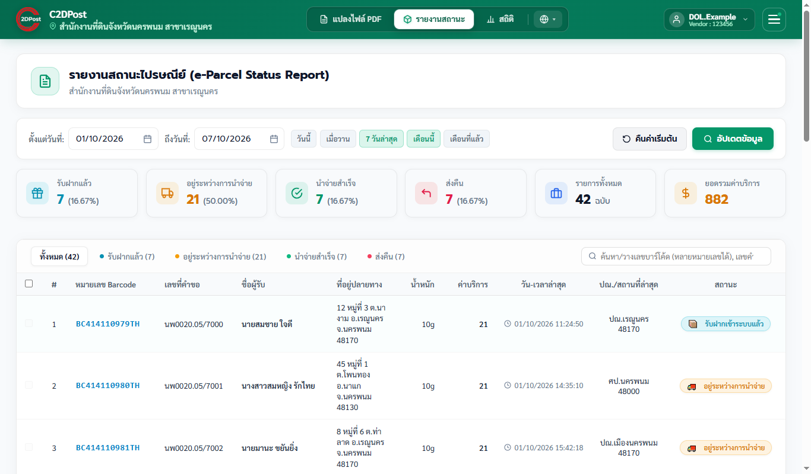
- เลือก วันเริ่ม และ วันสิ้นสุด หรือกดปุ่มลัด เช่น วันนี้ เมื่อวาน เดือนนี้ แล้วกด ดึงข้อมูล
- การ์ดสรุปแสดงจำนวนนำจ่ายสำเร็จ อยู่ระหว่างนำจ่าย ส่งคืน และอื่น ๆ กดที่การ์ดเพื่อกรองตารางตามสถานะนั้น
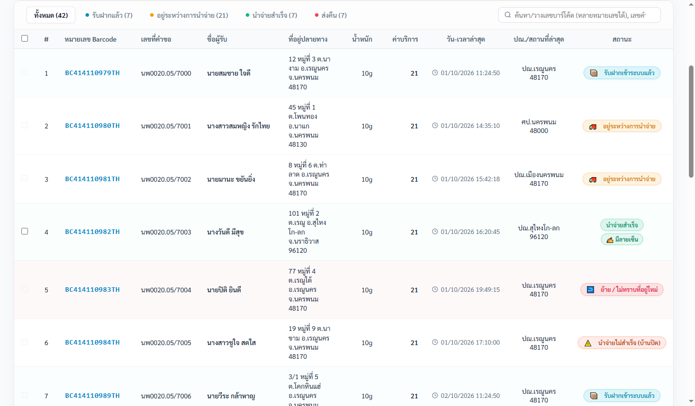
5.1 ค้นหาเลขบาร์โค้ด
พิมพ์หรือวางเลขบาร์โค้ด (หลายเลขได้) ในช่องค้นหาด้านบนตาราง ระบบจะค้นในรายการที่ดึงมา ถ้าไม่พบจะค้นจากระบบไปรษณีย์ให้
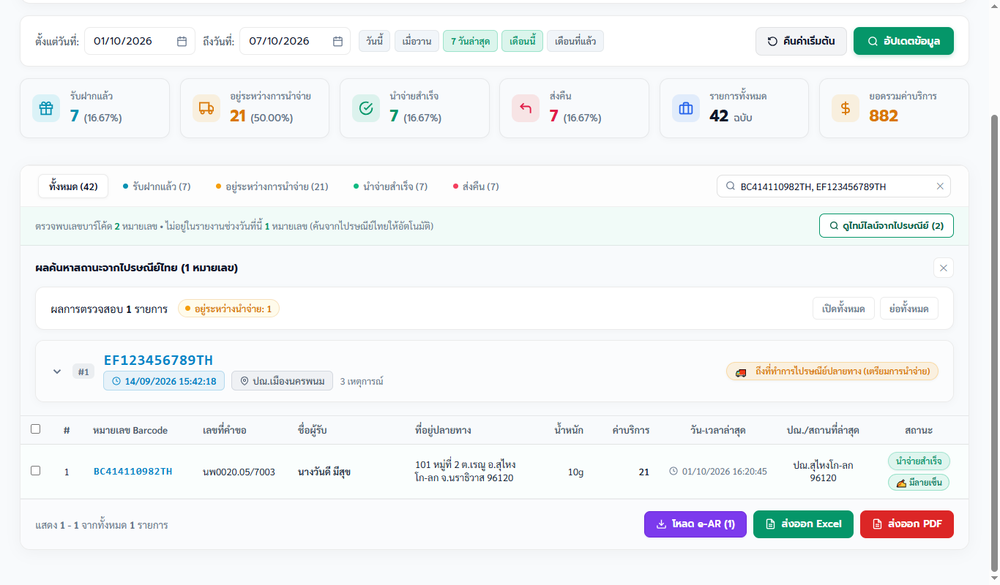
5.2 ดูประวัติการนำจ่าย
คลิกเลขบาร์โค้ดเพื่อดูไทม์ไลน์สถานะทุกขั้นตอน
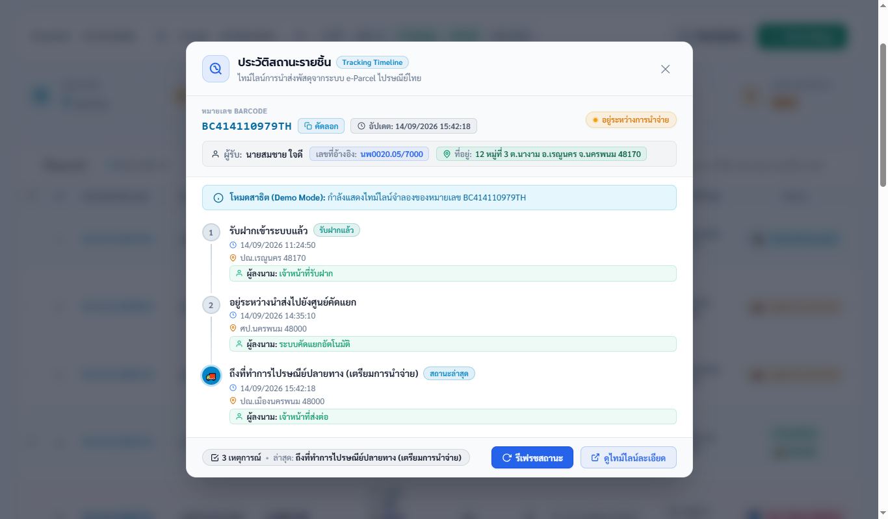
5.3 ลายเซ็นผู้รับและใบตอบรับ e-AR
| ป้าย | ความหมาย |
|---|---|
| ✍️ มีลายเซ็น | ใบตอบรับมีลายเซ็นผู้รับ คลิกเพื่อดูรูปลายเซ็น ความสัมพันธ์กับผู้รับ และผู้นำจ่าย |
| ✕ ไม่พบลายเซ็น | ใบตอบรับไม่มีรูปลายเซ็น ควรตรวจสอบกับที่ทำการไปรษณีย์ปลายทาง |
| ⚠ ระบบ e-AR มีปัญหา | ระบบ e-AR ของไปรษณีย์ขัดข้องชั่วคราว ตรวจลายเซ็นไม่ได้ ให้ลองใหม่ภายหลัง |
5.4 ส่งออกข้อมูล
ปุ่มด้านล่างตารางใช้ โหลด e-AR (PDF รวมใบตอบรับของรายการที่นำจ่ายสำเร็จ), ดาวน์โหลด Excel และ ดาวน์โหลด PDF ปุ่มโหลด e-AR จะกดไม่ได้ขณะที่ระบบ e-AR มีปัญหา
6. สถิติ (Dashboard)
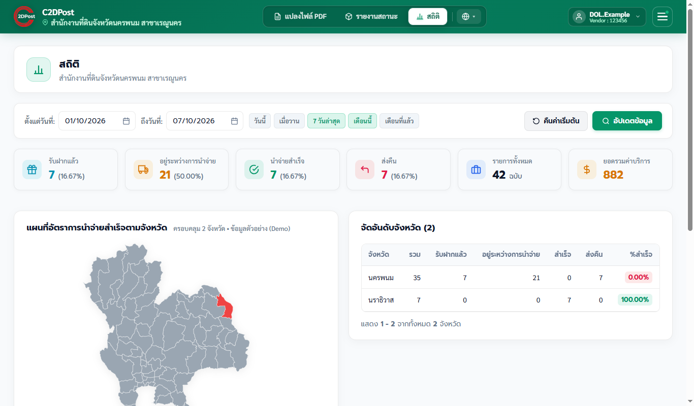
แผนที่แสดงปริมาณพัสดุรายจังหวัด/อำเภอ ตารางอันดับแสดงหน้าละ 15 รายการ
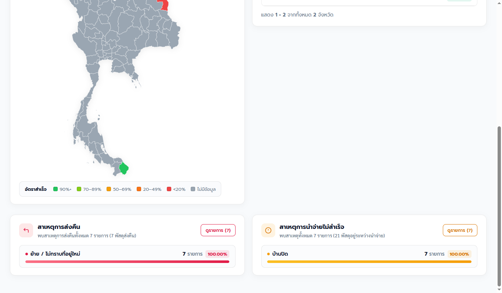
คลิกสาเหตุในการ์ดเพื่อดูรายการพัสดุของสาเหตุนั้น และกด ดาวน์โหลด Excel ได้
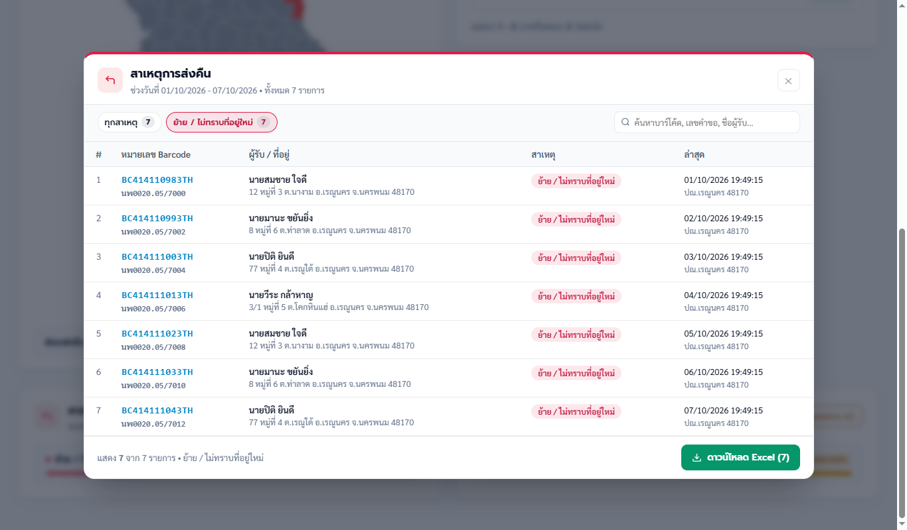
7. ใช้งานผ่านโทรศัพท์
บนโทรศัพท์ไม่ต้องติดตั้ง Extension ใช้ได้เฉพาะหน้ารายงานสถานะและสถิติ (หน้าแปลงไฟล์ใช้ได้บนคอมพิวเตอร์เท่านั้น) ตารางจะแสดงเป็นการ์ดเพื่อให้อ่านง่าย
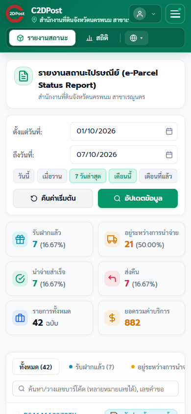
เมนูมุมขวาบน (☰) แสดงสถานะการเชื่อมต่อ ลิงก์คู่มือ และปุ่มออกจากระบบ
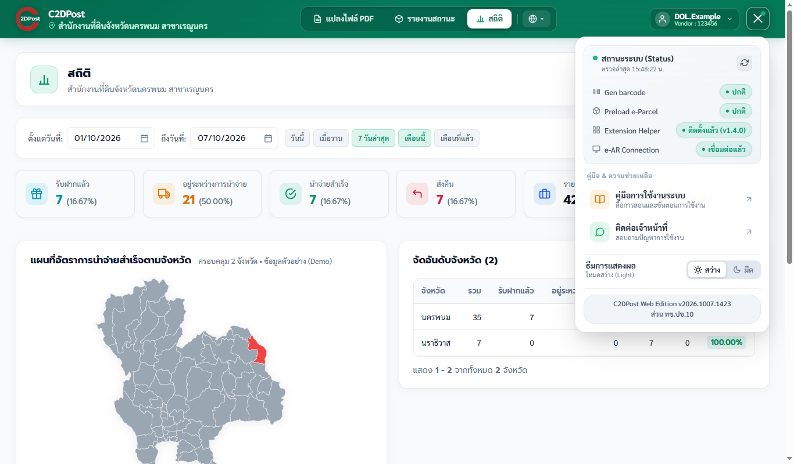
8. คำถามที่พบบ่อย
ติดตั้ง Extension แล้ว แต่ระบบยังขึ้นให้ติดตั้ง
กดรีเฟรชหน้าเว็บ ถ้ายังไม่ได้ ให้ไปที่ chrome://extensions ตรวจว่าเปิดใช้งาน C2DPost Helper อยู่ แล้วรีเฟรชอีกครั้ง
ขึ้นสถานะ "ระบบ e-AR มีปัญหา"
ระบบ e-AR ของไปรษณีย์ขัดข้อง (ไม่ใช่ปัญหาที่เครื่องของท่าน) ระหว่างนี้โหลด e-AR และตรวจลายเซ็นไม่ได้ รอสักครู่แล้วกดรีเฟรชสถานะในเมนู
ดึงรายงานนานมาก
บัญชีที่มีพัสดุจำนวนมากอาจใช้เวลาหลายนาที ลองเลือกช่วงวันที่สั้นลง หรือค้นด้วยเลขบาร์โค้ดโดยตรง
แปลงไฟล์ PDF แล้วข้อมูลไม่ครบหรือผิด
ไฟล์ที่เป็นภาพสแกนหรือรูปแบบต่างจากปกติอาจอ่านไม่ครบ ให้แก้ไขในตารางก่อนขอบาร์โค้ด ถ้าพบบ่อยแจ้งผู้ดูแลระบบพร้อมแนบไฟล์ตัวอย่าง
ขอบาร์โค้ดแล้วขึ้น Error 018
เป็นข้อผิดพลาดจากระบบ e-Parcel มักเกิดจากข้อมูลบัญชีไม่ถูกต้องหรือหมดอายุ ให้ออกจากระบบแล้วเข้าใหม่ ถ้ายังพบติดต่อผู้ดูแลระบบ
ติดต่อผู้ดูแลระบบ
ผ่าน LINE ที่ลิงก์ในหน้าเข้าสู่ระบบ